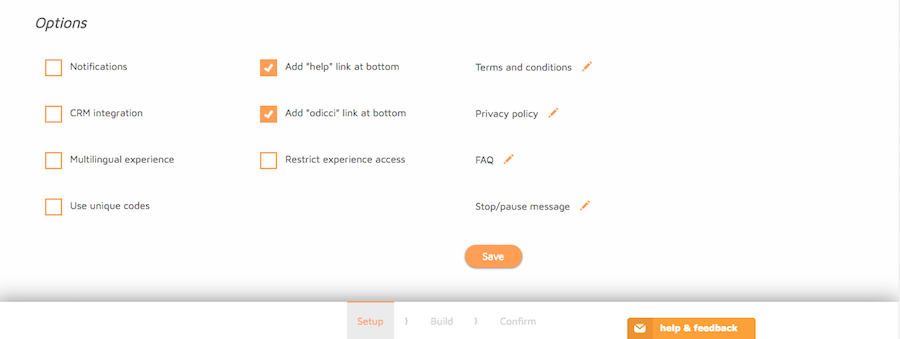

In this tutorial, we will give you a step by step guide to the use of all the tools required to create an Odicci Experience. from scratch, as well as using one of the templates provided.
On the homepage you will find thumbnails of all your Experiences with action buttons on each Experience that allows you to Edit, Preview, Duplicate, Delete and see the Reports of your experiences.
What You'll Learn
- Familiarize yourself with Odicci Experiences.
- Setting up a Experience from scratch.
- Building your experience's UI.
- Setting up Codes that users can input to earn prizes.
- Confirming and launching your experience.
What You'll Need
- A computer connected to the internet
- An Odicci Acount
From the homepage, click on "Create a new Experience", and choose "Create from Scratch" on the top right.
Selecting type of Experience
Experience info
You'll start completing general information about your experience, such as the Name, URL, ID and Dates when the experience will be running.
- Give your Experience a name
- You can choose to change the URL of your Experience
- Give your Experience an ID
- Select the start and end dates of your Experience
Options
- CRM Integration: this option allows you to set up integrations with CRMs such as Mailchimp, Adestra, Dotmailer, Pure360, Salesforce Marketing Cloud or Bronto. You’ll be able to configure these later in the “Confirm” step.
- Multilingual Campaign: allow your Experience to be translated into different languages. Once you complete this step, new tab (Locale) will appear in the progress bar, where you will be able to chose the languages you would like your Experience to be translated in.
- Use unique codes: you may want to give away vouchers with codes your clients can use to earn specific prizes. Choose whether you want to use codes for your Experience.
- Add “help” link at the bottom: allows you to add a link for customers to use when they experience any difficulties using the Experience. All help requests are directed to HelpScout.
- Add “odicci’ link at the bottom: allow customers to directly visit Odicci’s website
- Restrict campaign access: allows to restrict customers that use certain IP address or Email address to enter your Experience. You can also specify a time interval where these restrictions have effect (that restrict access to your campaign for a certain number of minutes, hours, weeks or months). To configure that up, check the Release box and choose your time interval. You can set up a customised Restriction Message to let your customers know why they are not able to enter you Experience. Once you're ready, Click Done.
- Terms and Conditions: To add your Terms and Conditions, click on the pencil icon and a box will appear. Paste your Terms and Conditions here and format them as you wish and clic Save.
- Privacy Policy: To add your Privacy Policy, click on the pencil icon and a box will appear. Paste your Privacy Policy here and format as you wish and clic Save.
- FAQ: To add your Frequently Asked Questions, click on the pencil icon and a box will appear. Paste your Frequently Asked Questions here and format them as you wish.
- Stop/Pause Message: When your Experience has come to an end, customers may still visit your Experience.
Odicci experiences are the best tool to create raffles and prize giveaways. In this section, you'll be able to configure different prize types, and set up giveaway rules that allows you to control the regularity on what your users will be able to receive them.
Prizes Table
In this section you can create different prizes that will be given away in your experience:
Customizing prizes
You can add new prizes or edit the ones that are included by default by clicking in the "Add New"or "Edit" butons, respectively.
In the edit page you'll be able to:
- Choose a name for your prize
- Select the prize type (either winner or loser)
- Change the quantity of prizes available
- You can upload Voucher Codes to be granted to the winners of this prize(*)
- Choose the Email Template that will be sent to the user that wins this price
- Send an email notification to any email address when this prize has been granted to an user
- Filter physical locations (stores) where this prize can be reedemed. (You must have configured )
- Select the image that will be displayed to the user who wins this prize
Voucher Codes
If you want to distribute voucher codes for the winners of a particular prize (for instance, a discount code), you can upload a CSV containing the values in the Prize’s configuration page. These values can be included in the email template related with that prize.
Prize Rules
Prize rules lets you define the number of prizes of any kind that should be granted to users on a certain regularity. From the table you can edit, enable/disable and delete prize rules.
To add a new prize rule, click on "New" at the top of the table, and choose a name for the rule.
Choose the prize that you want to apply this rule to, number of prizes to be granted each time and the regularity of the rule. To save the rule, click "Save".
Codes are a way to restrict the access to your experiences to specific customers, who will need to input a code that you share with them (digitally or physically). Every code can only be used once.
To get started with using Unique codes, click on Create unique codes.
A modal will appear, click on Export Codes
You will be asked if you would like to export a percentage of additional codes. Type in the box provided the percentage of additional codes you would like to export. If you do not want additional codes, set this to 0. Click Generate.
Your export will be downloaded to your computer in a CSV format in which you can now import by clicking on Import codes from CSV.
Upload your CSV file and click on Import Codes.
Your codes will appear in a table below showing the Codes and details such as the prize type, when it was created and the status; if the code has not been redeemed this will remain Unclaimed. When the code has been redeemed you are able to see who it was redeemed by and when.
Actions you can perform on codes are Delete and Reset.
The Left Sidebar
The Left Sidebar has 3 sections you can switch between along the top of the bar:
Frames Design Effects
Adding and Managing Frames
- Actions available on Frames are Hide, Duplicate and Delete
- To add more frames, click on the icon
- A pop up will appear with the different frames available:
- Click on the frame you want to add
- To rearrange the order of the frames, click and drag the frame to the desired position or click on the arrows on top of your frame
Managing the Design of your Experience
This section includes the options to:
- Add a logo
- Add an image as a background
- Add an image as a background
- Change the colour of text, buttons, background
- Change the font styles
- Change the header/footer background colour
- Set the header and footer font size
Click on and select your image from your Gallery or Upload on
Click on Add an Image and select your image from your Gallery or Upload on
Click on Add an Image and select your image from your Gallery or Upload on
Click on the colour icon and pick the desired colour by typing in the colour code or toggle with the colour picker to choose your colour
Click on Default and select a font style from the dropdown list
Click on the colour icon and pick the desired colour by typing in the colour code or toggle with the colour picker to choose your colour
Click inside the box below footer font size to type or use the arrows in the box to change the size. Follow the same step to change the font size for the header.
Adding Effects
- Click on the third tab on on the Left Sidebar
- Click on the effect you wish to use. You will see the change immediately.
- To remove the effect click on No Effect
The Right Sidebar
The Left Sidebar has 2 sections you can switch between along the top of the bar:
Edit Frames Edit Frames (Advanced)
Editing Frames
- To add text, an image or a video, click on:
- To preview your experience, click on View Online
For Text
For Images
For Videos
Editing Frames (Advanced
- To make the frame pre-filled, check the box
- To hide the logo, check the box
- To fix the button to the bottom of the page, check the box
- To set a different background for the frame you are working on, click on Add an image. You can do this for the desktop and the mobile version.
Locale
-
To select which languages to translate your experience to, simply tick the box for the appropriate country. Click on the SAVE button to save your chosen languages.

-
The next screen is where you can enter your translations for every element in your experience. To switch between the chosen languages, click on the dropdown for Set locale.
- To change or add more languages, click on the edit button.
Confirm
This section will inform you of any errors or warnings of the status of your Experience and allow you to set up CRM Integration. You may also set up Data Deletion and Analytics Integration (Advanced Options).
Publish Options are also available for set up in this section.
Status
Error and Warning MessagesEach error or warning will have a button that when clicked will direct you to where action is required. For example clicking on the Settings button for the Privacy Policy warning message, will take you back to the Setup tab where you can set up the Privacy Policy.
CRM Integration setup – Dotmailer Example- If CRM Integration has been selected in the set up, then the configuration for it will appear here in the Status section, otherwise it will not appear
- Click on edit to configure the CRM integration
- A CRM Settings box will appear, click on Select CRM and select the CRM to integrate with
- For each CRM integration a API Key or API username will be required. Provide these details and select the Address Book you wish to push your data to. Click on Save Target.
- Choose which fields you would like to map by clicking on the button and select the field from the dropdown list. Do the same for the Dotmailer fields.
- To remove a field from the integration, click on . Otherwise click on Save to save changes
Advanced Options
This section allows you to set up a Data Deletion process and Analytics Integration
Data Deletion setup
- To get started with the data deletion process, click on the Set button
- The options will drop down; select if you wish to delete data from the Experience after it has been pushed to the CRM OR to delete data at a set frequency of days, weeks, months and years
- To delete data after it is pushed to CRM, select the radio button
- To delete data on a daily/weekly/monthly or annually, select the radio button and choose the frequency of deletion from the dropdown list
- Which ever Data Deletion process you have selected, you must select at least one field to delete. To do this, simply check the box of the fields to delete.
- Once you have reviewed, click on the Confirm button.
- To set up Analytics Integration, click on the Enter Script button.
- A text box will appear, put your tracking script in the box provided.
- Click on the Save button.
Publish Options - Popup Example
-
To setup a popup, click on the Popup option. A box will appear containing the code required to enable the popup. Click on Setup.
-
A both will appear where the settings can be set. Choose the settings for the popup, review and save by clicking Save. Otherwise click Cancel to cancel setting up.